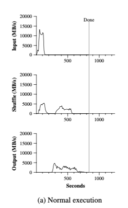
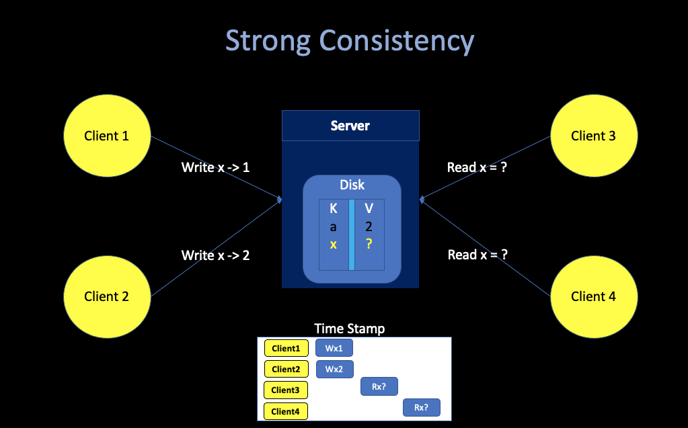
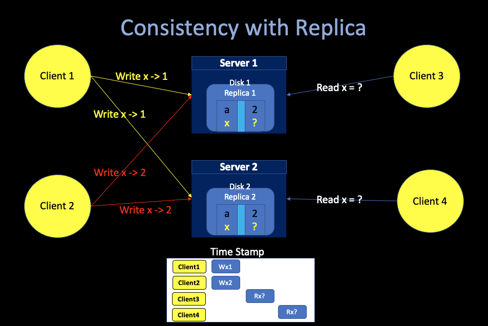

3. Google File Systems
02/22/2022 By Angold Wang
1. Distributed Storage
i. Why do we need distributed storage?
 * We want to
store more data * store data across multiple servers *
We want high performance (throughput) * split the
request data into pieces and read them concurrently from different
servers. * the mapreduce example: * The throughput of
single SSD is 10MB/s. * If we split the
big data set into 1000 servers. * We can
achieve 10000MB/s throughput by reading
from 1000 disks concurrently.
ii. Conumndrum of High-Performance
- we want high performance => shared data over many servers
- many servers => constant faults (some machines are gonna crash)
- fault tolerance => replication
- replication => potential inconsistencies
- better consistency => low performance
iii. Consistency
Strong Consistency
 * Suppose Client1 and Client2 write concurrently. * After the writes have completed, Client3 and Client4 read. What can they see?
Answer: either 1 or 2, but both have to see the same value. This is a “strong” concurrency model.
In a distributed system …
Replication for fault-tolerance makes strong consistency tricky.
 * Client1 and Client2 send writes to both, in parallel
This time, both Client3 and Client4 will also see either 1 or 2, but no guarrentee that they will see the same value. That is not a strong consistency.
Better consistency ususlly requires communication to ensure the replicas stay in sync, which can be slow. And there are lots of tradeoffs possible between performance and consistency.